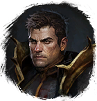

Кислота
Предметы / С заданий
Открыть в интерактивной вики →
| Вес | 1 |
|---|
Описание
Флакон кислоты от  Кровь чудовища из его органов.
Кровь чудовища из его органов.
Из ежедневного задания Кровь кровопийц [135ур]

Вулгарф. Благодаря ей вы извлечетеКровь чудовища из его органов. Из ежедневного задания Кровь кровопийц [135ур]